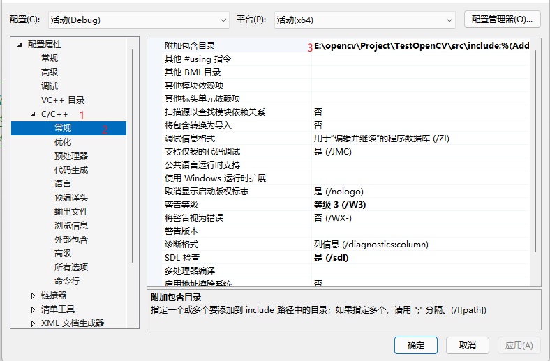
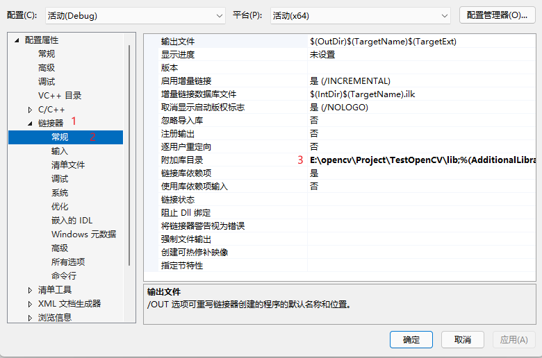
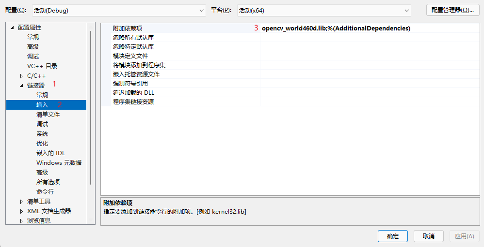
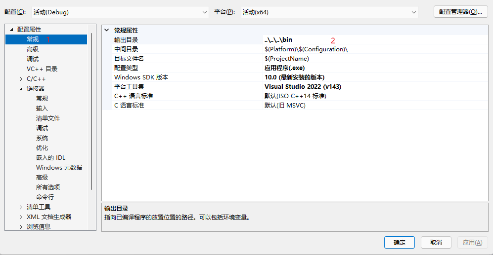
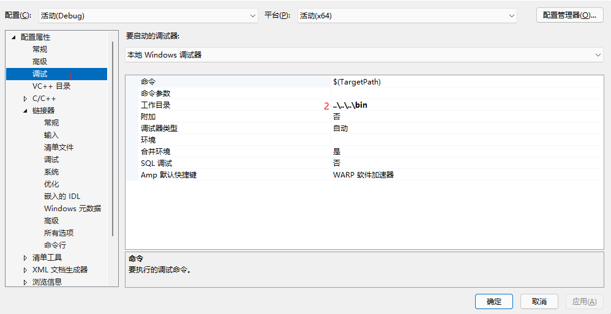

0. 环境介绍
操作系统: Windows11 21H2
CMake-gui: 3.24.2 (不要使用3.25.0-rc2，在configure过车中会出现类型大小检查错误)
OpenCV: 4.6.0
1. 整体流程介绍
我们按照C/C++的整个编译流程来安排项目的创建 0. 项目目录搭建
其中1
2
3
4
5├─Project
│ ├─bin
│ ├─lib
│ └─src
│ └─include bin目录中存放编译后输出的所有内容以及所需要使用的dll文件；lib存放库文件；bin就是整个编译输出的工作目录。
- 预处理
在项目结构中的
src/include下存放的就是需要的头文件，这就是在预处理阶段需要用到的内容。我们需要在VS2022中设置，如图
- 编译
在编译过程中我们需要引入OpenCV编译出来的库文件
opencv_world460d.lib。在VS2022中的设置，如图
- 设置库目录

- 设置库名称

- 链接 整个项目编译过后，我们需要进行链接，在这一步使用的就是dll文件（动态链接库文件）。在VS2022中设置的方式为
- 设置输出目录

- 设置调试的工作目录

这里我们并没有设置使用哪些dll文件，因为这些dll文件全都要放在编译输出的那个目录下
2. 测试代码
1 |
|